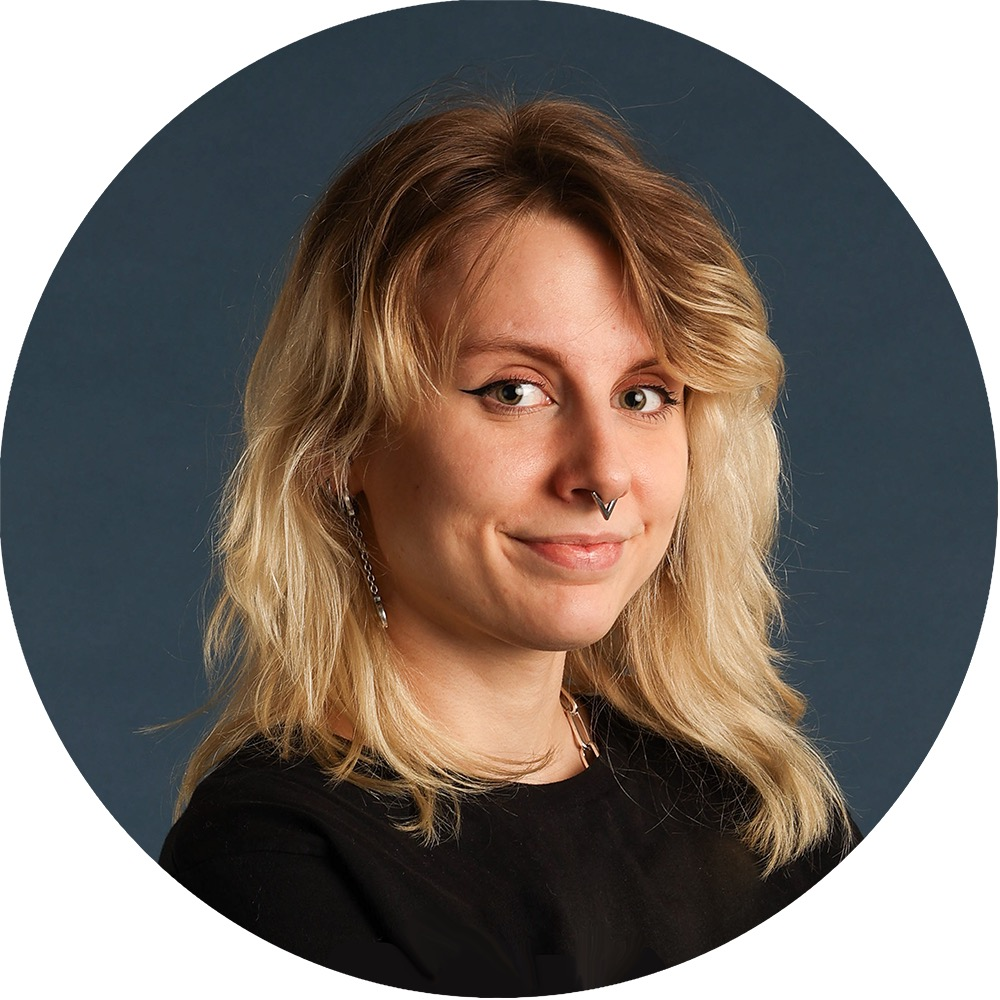

Julia Giaro — Graphic Design
Cut
to shape
Four pieces — click to cut
Logotypes
Crown — cut 1 of 2
Illustration
Crown — cut 2 of 2
Photography
Side band — cut 1
Fashion
Brim — cut on fold
BUCKET HAT · 4 PIECES · CUT ON FOLD WHERE MARKED
Reverse the cut
Sew the pieces together
Close
Joining the seams

About
Interaction designer and software engineer based in Gothenburg. Four pieces, one hat.
Back
Back